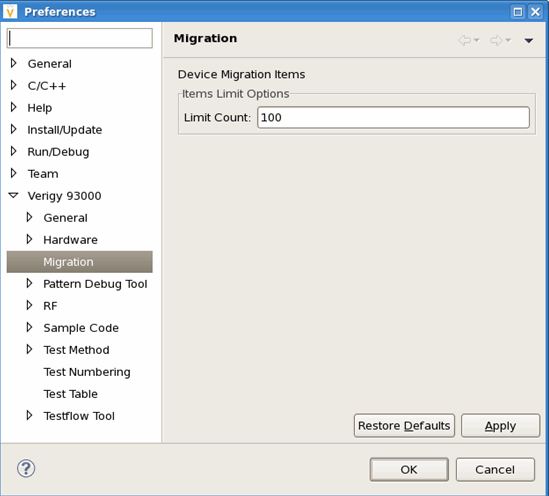

Migration Preferences
You can change the display or the layout of the migration framework.
You can use the toolbar to:
- Open the migration profile configuration wizard
- Screen the selected testflow or test program
- Clear all of migration items in the "Migration Items View"
- Open a shell and execute a command
- Switch to monitor the load or execution action for migration items.
- List the potential correlation hints on current profile configuration
The toolbar is shown below:
From the generic Eclipse preference configuration, you can set the number of migration items to be displayed in the migration item list as shown below

Functional changes
- Introduced in SmarTest 7.1.0